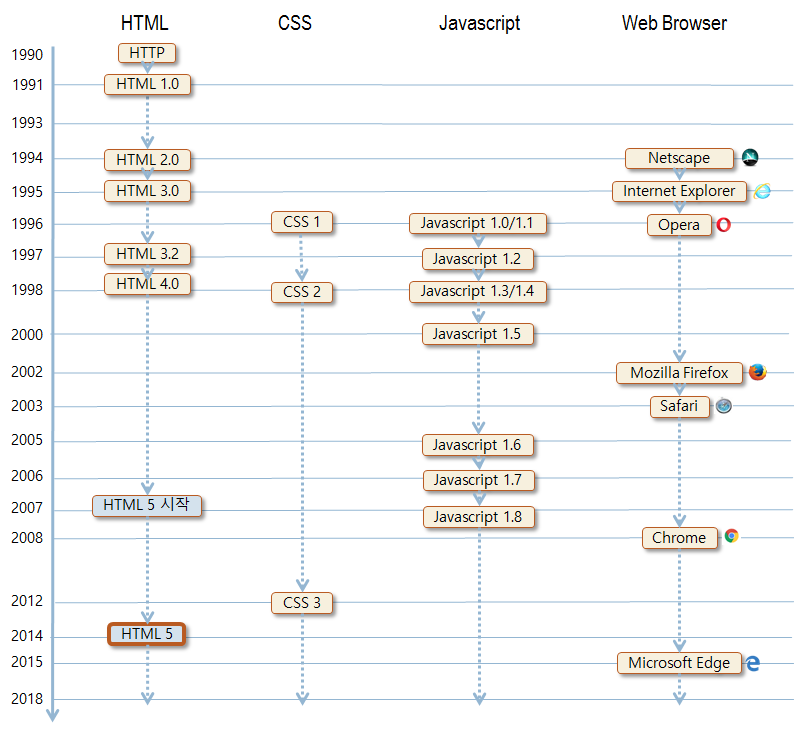

웹 개요 웹의 기본 목적 다른 여러 컴퓨터에서 문서를 공유하거나 보는 목적 웹에서 다루는 문서를 웹 문서라고 부름 웹의 구조 인터넷을 활용하여 거미줄처럼 연결된 정보 소통 망, World Wide Web 웹 문서를 인터넷 상의 컴퓨터들끼리 주고 받는 네트워크 시스템 웹의 구성 웹 서버와 웹 클라이언트 컴퓨터들로 구성 웹 서버 웹 사이트를 탑재하는 컴퓨터. 구글(www.google.com), 네이버(www.naver.com) 등 웹 문서, 이미지. 동영상 등의 데이터 저장 관리 웹 클라이언트의 요청을 받아 웹 문서 전송 웹 서버로 작동하도록 하는 소프트웨어 실행 웹 클라이언트 사용자 인터페이스 담당 웹 서버에 웹 문서를 요청하고 받아 사용자에게 출력
웹의 시작과 성공 만들기 쉬운 웹 문서 사용하기 쉬운 HTML 태그 언어, 단순하고 직관적 HTML 태그의 웹 페이지는 텍스트 문서 아무 텍스트 편집기로 편집 가능 효율적인 HTTP 통신 웹 브라우저가 웹 페이지를 모두 전송 받고 나면 웹 서버와의 접속을 끊는 방식 웹 서버에 많은 웹 브라우저의 동시 접속에 따른 낮은 부담 웹 서버와 웹 브라우저의 작업 분담 웹 서버는 웹 브라우저로부터 요청 받은 자원 전송 담당 웹 문서를 출력하는 것은 브라우저의 몫 웹 서버의 낮은 부하로 많은 동시 접속자 지원
웹 페이지 구성 웹 페이지 구성 3 요소 웹 페이지의 구조와 내용 - HTML 웹 페이지의 모양 - CSS(Cascading Style Sheet) 웹 페이지의 행동 및 응용 프로그램 – Javascript 웹 페이지는 3 요소를 분리하여 개발
HTML5 HTML 언어의 역사 1990년 물리학자인 Tim Berners-Lee가 정의 표준화된 태그로 웹 페이지를 작성하는 언어 <img>, <hr>, <table>, <li> 등 HTML, CSS, Javascript, 웹 브라우저의 타임 라인 
HTML5의 기능 HTML5 전체 기능 웹 문서 작성을 위한 HTML 태그 셋 웹 애플리케이션 작성을 위한 API HTML5 기능 요약 웹 폼(Web Form) 오디오, 비디오 캔버스(Canvas) SVG(Scalable Vector Graphic) 웹 스토리지(Web Storage) 웹 SQL 데이터베이스(Web SQL Database) 인덱스 데이터베이스(Indexed Database API) 파일 입출력(File I/O) 위치 정보 API(Geolocation API) 웹 워커(Web Worker) 웹 소켓(Web Socket) 오프라인 웹 애플리케이션(Offline Web Application)